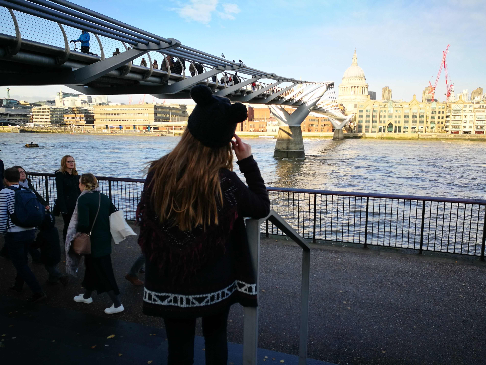
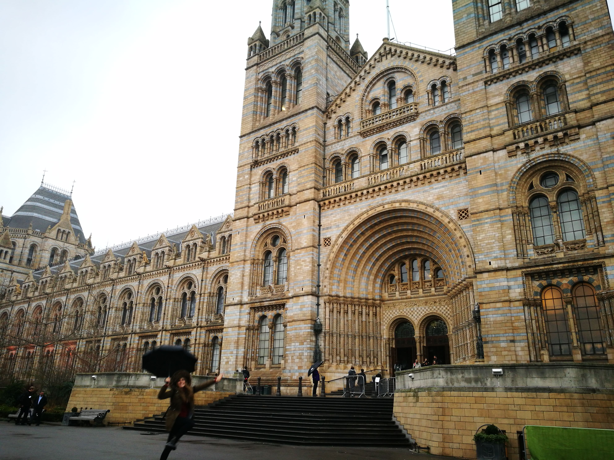
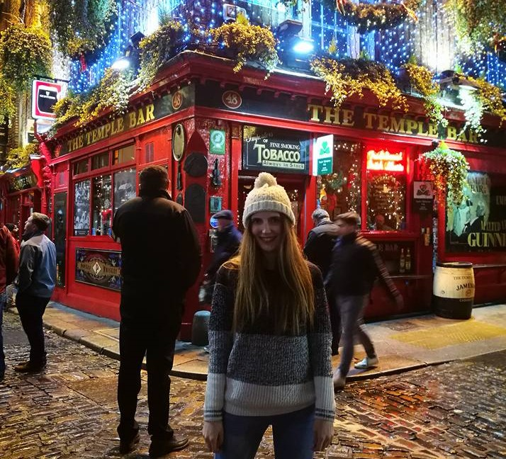
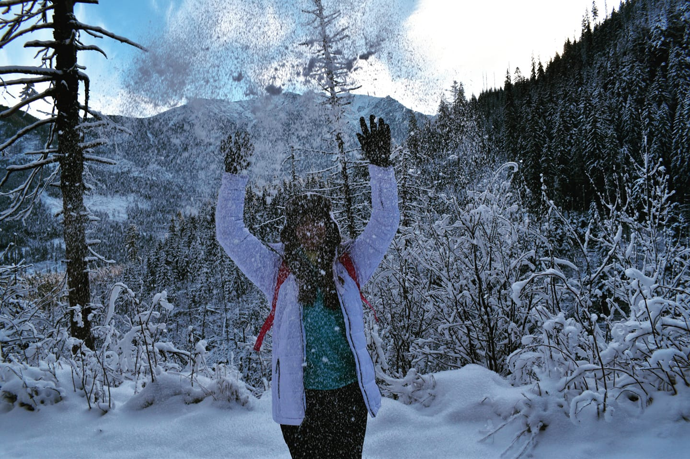
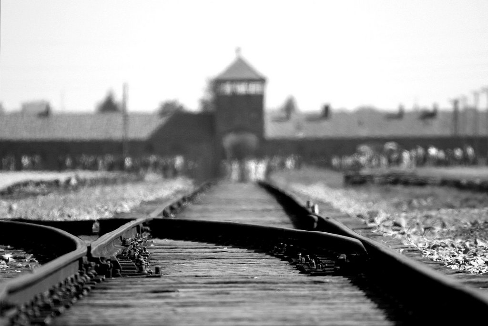

Londres, mi ciudad favorita.
 Mi primera vez en Londres fue con el Instituto,
hace ya muchos años y esos viajes, aunque divertidos, no te quedan en la memoria por las cosas que viste.
Tenía pocos recuerdos de Londres y sabía que algún día tendría que volver.
Y lo hice, en 2016. Quería dedicarme enteramente a la ciudad, sus museos, sus calles.
¿Cuál es el misterio que esconde Londres para que las más antiguas tradiciones y los viejos objetos resulten tan cool?
Puede que algunas de sus peculiaridades e historias sean tan genuinas como para transmitir tanto arraigo y fuerza.
¿Queréis conocer algunas curiosidades que forman parte de Londres?
 Fue en Londres donde se construyó, en 1863, la primera línea de metro del mundo denomoninada the tube. En agosto y en Notting Hill, se celebra cada año un gran desfile de disfraces al más puro estilo brasileño. En 1666 el fuego asoló Londres hasta el punto de afectar al 80% de la ciudad. Londres es una de las ciudades con más parques y jardines en el mundo. Visitan la ciudad más de 30 millones de personas Los black cabs, esos emblemáticos y enormes taxis negros son absolutamente especiales por más razones que su aspecto. ¿Sabéis que para obtener la licencia de taxista se ha de aprobar un test de conocimiento de un altísimo nivel? Antes de estar ahí, conduciendo han de haber memorizado 25.000 calles y 20.000 puntos de referencia, una preparación tan detallada como para necesitar estudiar una media de entre 2 y 4 años.
Buscando duendes en la Isla Esmeralda.
 Así es, me refiero a Irlanda, una islita muy especial para mí
y no solo por lo bellísima que es sino por su ambiente juvenil y su sinfin de posibilidades.¿Qué vinieron a buscar a Irlanda
los celtas?, ¿y los vikingos?, ¿y los ingleses? “No fue por el clima”, nos recuerda la campaña publicitaria de una conocida
marca de whiskey irlandés. ¿Y qué fui a buscar yo? Volví a Irlanda para perfeccionar mi inglés, a pesar de que mi estancia
fue corta, conocí a personas geniales y me quedo con un recuerdo en particular; un día cualquiera, decidí dar un paseo y me pilló
la lluvia, un vecino de la zona que estaba en la puerta de su casa me saludó y me dijo: Disfruta del clima. De eso se trata, de disfrutar
de todo lo que la vida nos ponga por delante. E Irlanda ofrece mucho de eso.Os invito a adentrarnos juntos en el mundo de la historia, de
la cultura, de la leyenda, de la naturaleza… y también de la política irlandesas. Como dicen los anfitriones irlandeses en su vieja lengua
celta, céad míle fáilte (cien mil bienvenidas).
Así es, me refiero a Irlanda, una islita muy especial para mí
y no solo por lo bellísima que es sino por su ambiente juvenil y su sinfin de posibilidades.¿Qué vinieron a buscar a Irlanda
los celtas?, ¿y los vikingos?, ¿y los ingleses? “No fue por el clima”, nos recuerda la campaña publicitaria de una conocida
marca de whiskey irlandés. ¿Y qué fui a buscar yo? Volví a Irlanda para perfeccionar mi inglés, a pesar de que mi estancia
fue corta, conocí a personas geniales y me quedo con un recuerdo en particular; un día cualquiera, decidí dar un paseo y me pilló
la lluvia, un vecino de la zona que estaba en la puerta de su casa me saludó y me dijo: Disfruta del clima. De eso se trata, de disfrutar
de todo lo que la vida nos ponga por delante. E Irlanda ofrece mucho de eso.Os invito a adentrarnos juntos en el mundo de la historia, de
la cultura, de la leyenda, de la naturaleza… y también de la política irlandesas. Como dicen los anfitriones irlandeses en su vieja lengua
celta, céad míle fáilte (cien mil bienvenidas).
 Hablemos ahora un poco de Dublín. Solo pronunciar el nombre de esta ciudad evoca imágenes de historia, colinas verdes, fascinantes callejuelas y un sinfín de pintas de Guinness. Los orígenes de esta ciudad son de lo más interesante. Dublín es una ciudad medieval fundada originariamente por vikingos. Con amplias sonrisas, ojos achinados e increíbles historias que contar. Aquellos que viajan a otros países pueden hablarte de la «simpatía de la gente» que vive allí, pero hasta que no hayas visto a los irlandeses en su tierra natal no sabrás lo que de verdad significa ser simpático. En resumen: los dublineses son una maravilla. Os garantizo que la música tradicional irlandesa os tocará la fibra, incluso si no estáis preparados para ello.
En el corazón de Europa.
 Visitar Polonia es algo mágico. Cada año ese destino es más popular entre turistas de España.
Paseando por Cracovia a veces tengo impresión que hay más Españoles que Polacos en las calles (solo se escucha la lengua española). Los polacos llamamos
nuestro país “el corazón de Europa”. ¿Por qué? Porque está ubicada en la Europa Central y las formas de las fronteras se parecen a la forma de un corazón.
Mar, montañas, lagos, dunas, cuevas, bosques y… un desierto. Si si. En Polonia hay un desierto que se llama Pustynia Błędowska. Da igual donde vas, siempre
encontrarás lugares que te sorprenderán.
En Polonia os llenareis por poco dinero. La cocina polaca es diferente de la española (tenéis que contar 3-4 kg más después de viaje), pero vale la pena.
Lo mejor dejo al final. Viajar por Polonia es relevante barato comparando con otros países. Lo que sube más son vuelos (pero eso depende cuando viajáis).
Ese país os ofrece hoteles muy económicos y con bastante lujo (agua, infusiones y café entran en el precio de estancia en muchos hostales
 Durante tu visita a Cracovia, no puedes olvidar de visitar las minas de sal de Wieliczka y tampoco los
campos de concentración de Auschwitz. Para muchas personas es una experiencia impactante. Estar en el mismo lugar que millones de prisioneros durante la Segunda
Guerra Mundial y tratar de “experimentar” una tragedia con ellos.
Los campos constaban de tres partes: Auschwitz I, “el campo madre”. Era un lugar con trabajo forzado y desde el cual las SS manejaban todo el complejo. Auschwitz
II-Birkenau – un campo de concentración, un lugar de exterminio masivo con cinco complejos de crematorios. Al final Auschwitz III Monowitz – otro campo de trabajo forzado.
Hoy en día, el museo está abierto para visitantes en las dos primeras partes de los campos.